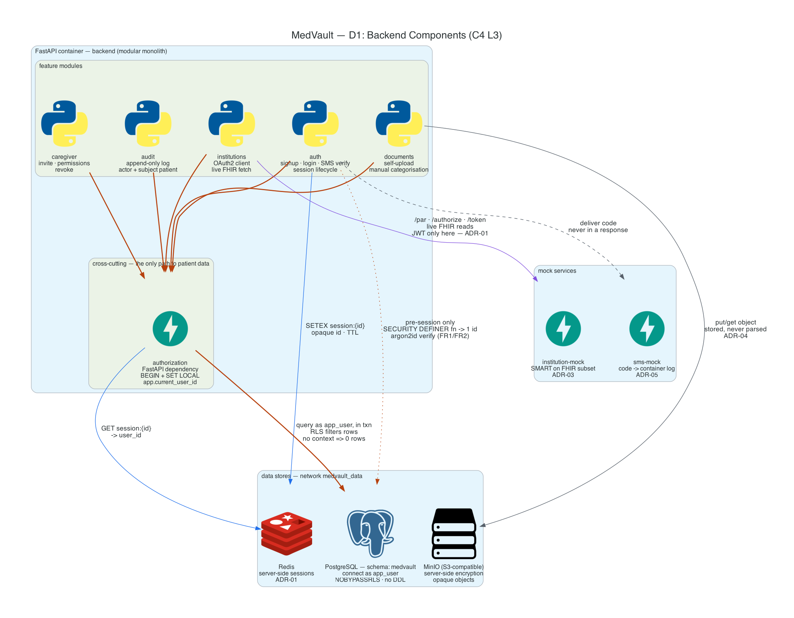
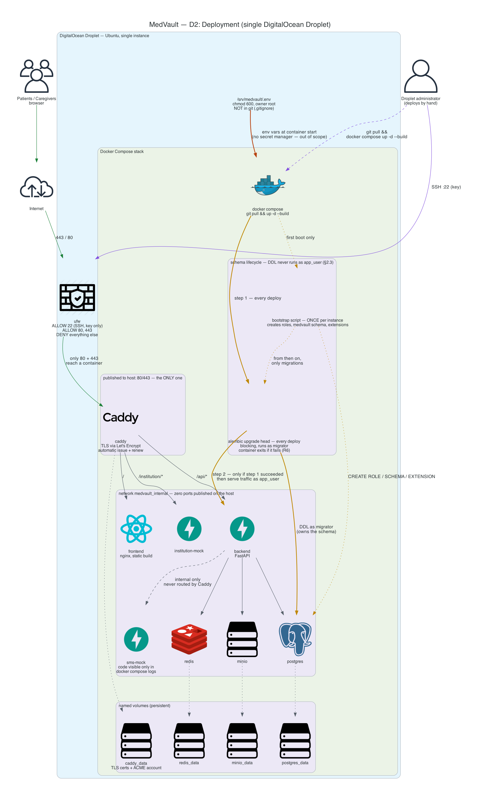

C4 component & deployment diagrams, and the four request flows where an implementation mistake has a security consequence.
Note. Two documents both labelled v1.1 have circulated. This page follows the later English revision — the one with §2.3 Database Setup & Migration Strategy, Alembic in the stack table, and risk R6. Diagrams here are intentionally simple; they will get more abstract and larger as the design settles.
The inside of the FastAPI container: modules, their boundaries, and which
store each one touches. The point of the picture: no feature module reaches
PostgreSQL on its own — every data path goes through authorization,
which opens the transaction and sets app.current_user_id with
SET LOCAL (ADR-02).

docs/architecture/backend_components.py (Python diagrams / Graphviz).One DigitalOcean Droplet, one Docker Compose stack, manual deploys.
Caddy is the only process with a port published to the host. Schema changes
reach the database only through a blocking alembic upgrade head
step, run by migrator, before the app serves traffic (§2.3, R6).

docs/architecture/deployment.py (Python diagrams / Graphviz).Spec: FR1 (argon2id password hash), FR2 (SMS code on every sign-in, a mandatory second factor — not optional), ADR-01 (server-side session in Redis), ADR-05 (sms-mock; the code exists only in the container log).
No JWT appears anywhere in this flow. The cookie carries an opaque session id and nothing else.
sequenceDiagram
autonumber
actor U as Browser (Patient/Caregiver)
participant CA as Caddy
participant AU as Backend · auth
participant PG as PostgreSQL
participant SMS as sms-mock
participant R as Redis
Note over U,R: Step 1 — credentials
U->>CA: POST /api/auth/login {phone, password}
CA->>AU: forward over medvault_internal
AU->>PG: pre-session lookup by phone (SECURITY DEFINER, returns one id)
PG-->>AU: user_id + argon2id hash
AU->>AU: argon2id verify (FR1)
alt password invalid
AU-->>U: 401 generic "invalid credentials"
Note right of AU: Same message and timing as an unknown phone,<br/>so the response cannot be used to enumerate accounts.<br/>No session is created.
else password valid
AU->>AU: generate 6-digit code
AU->>R: SETEX pending_verification:{phone} TTL 300s
AU->>SMS: POST /send {phone, code}
SMS->>SMS: write code to stdout
Note right of SMS: The code exists ONLY in the container log<br/>(docker compose logs sms-mock) — ADR-05.<br/>It is never returned in an HTTP response.
SMS-->>AU: 202 Accepted
AU-->>U: 202 "code sent" (no code in the body)
end
Note over U,R: Step 2 — the second factor (FR2, always required)
U->>CA: POST /api/auth/verify {phone, code}
CA->>AU: forward
AU->>R: GET pending_verification:{phone}
alt code wrong, expired, or absent
R-->>AU: miss / mismatch
AU-->>U: 401 generic "invalid or expired code"
Note right of AU: No session created. The attempt is counted<br/>against a rate limit on this endpoint —<br/>the stored code is not revealed either way.
else code correct
R-->>AU: match
AU->>R: DEL pending_verification:{phone}
Note right of AU: Single use — a correct code is burned<br/>so it cannot be replayed.
AU->>R: SETEX session:{opaque_id} TTL 3600s {user_id, role}
AU-->>U: 200 + Set-Cookie: mv_session=opaque_id
Note over U,R: Cookie is HttpOnly, Secure, SameSite=Lax.<br/>It holds an opaque id + HMAC — no user data, no role,<br/>no JWT (ADR-01). Session state lives only in Redis,<br/>so DEL session:{id} revokes access instantly.
end
POST /auth/start responds
202 with no code in the body. The only readable copy is the sms-mock log.
A network attacker who can read responses still cannot log in.The most important flow in the system. Every other authenticated request is a special case of this one.
Spec: ADR-02 (authorization enforced by PostgreSQL RLS, fail-closed when the context is missing), R1 and R4 in §6 (omitted middleware; connection recycled from the pool without resetting the context).
sequenceDiagram
autonumber
actor U as Browser
participant MW as Backend · authorization<br/>(FastAPI dependency)
participant H as Backend · endpoint handler
participant R as Redis
participant PG as PostgreSQL (as app_user)
U->>MW: GET /api/documents<br/>Cookie: mv_session=opaque_id
MW->>MW: verify cookie HMAC
MW->>R: GET session:{opaque_id}
alt no session (expired, revoked, forged id)
R-->>MW: nil
MW-->>U: 401 — request never reaches the database
else session valid
R-->>MW: {user_id, role}
MW->>PG: BEGIN
MW->>PG: SELECT set_config('app.current_user_id', user_id, true)
Note right of MW: is_local => true, i.e. SET LOCAL semantics.<br/>Scoped to the TRANSACTION, not the connection.<br/>Connections are pooled and reused across patients —<br/>a per-connection SET would leak one patient's<br/>context into the next request (risk R4).
MW->>H: hand over the session-scoped txn
H->>PG: SELECT * FROM documents
Note right of PG: The query carries NO "WHERE patient_id = ..." clause.<br/>The RLS policy is the filter:<br/>USING (patient_id = current_patient_id())
PG-->>H: only this patient's rows
H-->>MW: result
MW->>PG: COMMIT
Note right of PG: COMMIT discards app.current_user_id.<br/>The connection returns to the pool with no context.
MW-->>U: 200 + rows
end
A new endpoint is added and the author forgets the authorization dependency
(risk R1). The request still reaches the database, but with no context set.
sequenceDiagram
autonumber
actor U as Browser
participant H as Backend · endpoint handler<br/>(authorization dependency MISSING)
participant PG as PostgreSQL (as app_user)
U->>H: GET /api/some-new-endpoint
Note over H: BUG — no BEGIN + SET LOCAL.<br/>app.current_user_id was never set.
H->>PG: SELECT * FROM documents
Note right of PG: current_setting('app.current_user_id', true) => NULL<br/>policy: USING (patient_id = NULL)<br/>NULL comparison is never true.
PG-->>H: 0 rows
H-->>U: 200 with an empty list
Note over U,PG: TC-SEC-01 — the bug degrades to "no data",<br/>never to another patient's data.<br/>Not a 500, and not a cross-patient leak.<br/>app_user is NOBYPASSRLS and does not own the tables,<br/>so it cannot escape the policy.
What TC-SEC-01 asserts: query a patient-data table as app_user with no
app.current_user_id set, and get exactly zero rows while the same rows are
visible to a role that bypasses RLS. Failing open — any row count above zero —
is a release blocker.
Run it against a live stack:
curl -s http://localhost/api/_rls/selftest
Raising an exception on a missing context would also be safe, but it depends on application code remembering to check. The RLS policy is evaluated by the database engine on every query, including queries written by code that has never heard of the check. Zero rows is the weakest outcome that is still safe, and it needs no cooperation from the caller — which is the whole point of ADR-02.
Spec: FR3 (OAuth2 consent flow), FR4 (institutional records fetched live), FR10 (audit entry), ADR-03 (simulated institution, patient id taken from the token claim), R2 (IDOR), R3 (intercepted authorization code).
This is the only flow in MedVault where a JWT exists. It is a server-to-server access token, never a user session (ADR-01).
sequenceDiagram
autonumber
actor U as Browser (Patient)
participant B as Backend · institutions
participant IM as institution-mock<br/>(authorization + resource server)
participant MW as Backend · authorization
participant PG as PostgreSQL (as app_user)
U->>B: POST /api/institutions/connect
B->>B: generate state + PKCE verifier, store against the session
B->>IM: POST /par (IDNP, state, PKCE challenge, scopes)
Note right of IM: Resolve IDNP to the institution's Patient ref,<br/>then discard it. Store only a hash of request_uri.
IM-->>B: {request_uri, expires_in: 90}
B-->>U: 302 -> GET /institution/authorize?request_uri=...
U->>IM: GET /authorize (consent screen)
Note right of IM: The patient authenticates HERE, at the institution.<br/>This step decides WHO the subject is — and it is<br/>the only place that decision is ever made.
IM-->>U: 302 -> redirect_uri?code=...&state=...
U->>B: GET /api/v1/institutions/callback?code&state
B->>B: verify state matches the session
Note right of B: A mismatched or missing state is rejected here.<br/>Without it, an attacker could have the patient's<br/>browser deliver an attacker-issued code.
B->>IM: POST /token (code, PKCE verifier, redirect_uri, client auth)
Note right of IM: Code TTL 60s, single-use. It is removed from the<br/>store BEFORE validation, so a failed exchange<br/>burns it too (risk R3).
IM->>IM: mint JWT — sub = patient id, scope, exp
IM-->>B: {access_token, refresh_token, token_type, expires_in}
B->>MW: save active connection under patient's context
MW->>PG: BEGIN + SET LOCAL app.current_user_id = patient_id
MW->>PG: UPDATE institution_connections<br/>(encrypted tokens, Patient ref, status=active)
MW->>PG: INSERT INTO audit_logs (actor, subject_patient, action) — FR10
MW->>PG: COMMIT
B-->>U: 200 — institution connected
U->>B: GET /api/records/analyses
B->>IM: GET /Observation<br/>Authorization: Bearer <token>
Note over B,IM: NO "patient" query parameter is sent — and the<br/>endpoint rejects one with 400. The subject comes<br/>only from the token claim (ADR-03, R2).
IM->>IM: validate signature, audience, exp, jti, institution, scope
IM-->>B: FHIR Bundle for the token's patient
Note right of B: Render with Cache-Control: no-store.<br/>Do not persist institutional records.
B-->>U: live institutional records
sequenceDiagram
autonumber
participant A as Any holder of a VALID token<br/>(subject = patient-001)
participant IM as institution-mock
A->>IM: GET /Observation?patient=patient-002<br/>Authorization: Bearer <valid token for patient-001>
IM-->>A: 400 — "the 'patient' query parameter is not accepted —<br/>the subject is taken from the access token"
Note over A,IM: Rejected, not silently ignored. A caller that sends<br/>?patient= believes it is choosing the subject — ignoring it<br/>would hand back patient-001's data while the caller<br/>logged it as patient-002's. The 400 makes the<br/>authorization bug visible at the source.
sequenceDiagram
autonumber
participant B as Backend · institutions
participant IM as institution-mock
B->>IM: POST /token (code=abc123) — first exchange
IM->>IM: pop code from store, validate, mint token
IM-->>B: 200 {access_token}
B->>IM: POST /token (code=abc123) — replay
IM->>IM: code is gone from the store
IM-->>B: 400 {"detail": "invalid_grant"}
Note over B,IM: Same 400 for an expired code (>60s) and for a code<br/>burned by a FAILED exchange. An attacker who<br/>intercepts a code gets one attempt at most (R3).
Disconnecting marks the connection revoked, wipes its encrypted tokens and calls the mock's revocation endpoint. Because institutional records are fetched live and never persisted by MedVault, they disappear from the application immediately.
Spec: FR6 (invitation states pending / active / revoked), FR7 (Caregiver sees only what the Patient marked visible), FR9 (revocation is effective immediately), FR10 (audit entry), ADR-01, ADR-02.
The interesting part is what the system does not do: it does not touch the Caregiver's Redis session.
sequenceDiagram
autonumber
actor P as Browser (Patient)
participant B as Backend · caregiver
participant MW as Backend · authorization
participant PG as PostgreSQL (as app_user)
participant R as Redis
actor C as Browser (Caregiver)
Note over P,C: Before — the link is active and the Caregiver can read<br/>the documents the Patient marked visible (FR7).
C->>MW: GET /api/documents (via S2)
MW->>PG: SET LOCAL app.current_user_id = caregiver_id
PG-->>C: the Patient's visible documents
Note over P,C: The Patient revokes.
P->>B: DELETE /api/caregivers/{id}
B->>MW: authorization context = patient_id
MW->>PG: BEGIN + SET LOCAL app.current_user_id = patient_id
MW->>PG: UPDATE caregiver_links SET status='revoked' WHERE id=...
MW->>PG: INSERT INTO audit_logs (actor=patient, subject=patient, action='caregiver.revoke') — FR10
MW->>PG: COMMIT
B-->>P: 200 — revoked
rect rgb(245, 235, 235)
Note over B,R: Redis is NOT touched. The Caregiver's session stays<br/>valid AS AUTHENTICATION — they are still themselves.<br/>What changed is what they are AUTHORIZED to see,<br/>and that lives in PostgreSQL, not in the session.
end
Note over P,C: The Caregiver's very next request — no logout, no waiting.
C->>MW: GET /api/documents<br/>Cookie: mv_session=... (still valid)
MW->>R: GET session:{id}
R-->>MW: {user_id: caregiver_id} — still a live session
MW->>PG: BEGIN + SET LOCAL app.current_user_id = caregiver_id
MW->>PG: SELECT * FROM documents
Note right of PG: The RLS policy joins through caregiver_links<br/>and requires status='active'. The row is now<br/>'revoked', so the join matches nothing.
PG-->>MW: 0 rows
MW-->>C: 200 with an empty list
Note over C,PG: Effective on the NEXT QUERY, with no session invalidation,<br/>no token blocklist, and no propagation delay (FR9).
If the Caregiver's permissions travelled inside a signed token, the token issued before the revocation would keep asserting them until it expired. Making that safe requires a server-side blocklist checked on every request — which is a session store with extra steps, and it discards the stateless property that was the only reason to choose JWT in the first place.
By keeping the session as an opaque id and the permissions in the database, the authorization decision is re-evaluated by the RLS policy on every single query. There is no window during which a stale credential still works.
| Session (Redis) | Permission (PostgreSQL) | |
|---|---|---|
| Answers | "who is this?" | "what may they see?" |
| Changed by revocation | no | yes |
| Re-checked | once per request | on every query, by the engine |
This is the same mechanism as FR5 (institution disconnect) and the reason S2's fail-closed behaviour matters: revocation and a missing context converge on the same safe result — zero rows.
authorization (D1).GET /Observation takes no patient query parameter (S3, ADR-03, R2).app_user — only the blocking migration step, run by migrator (D2, §2.3, R6).Full source, regeneration instructions, and known gaps are in docs/architecture/README.md.